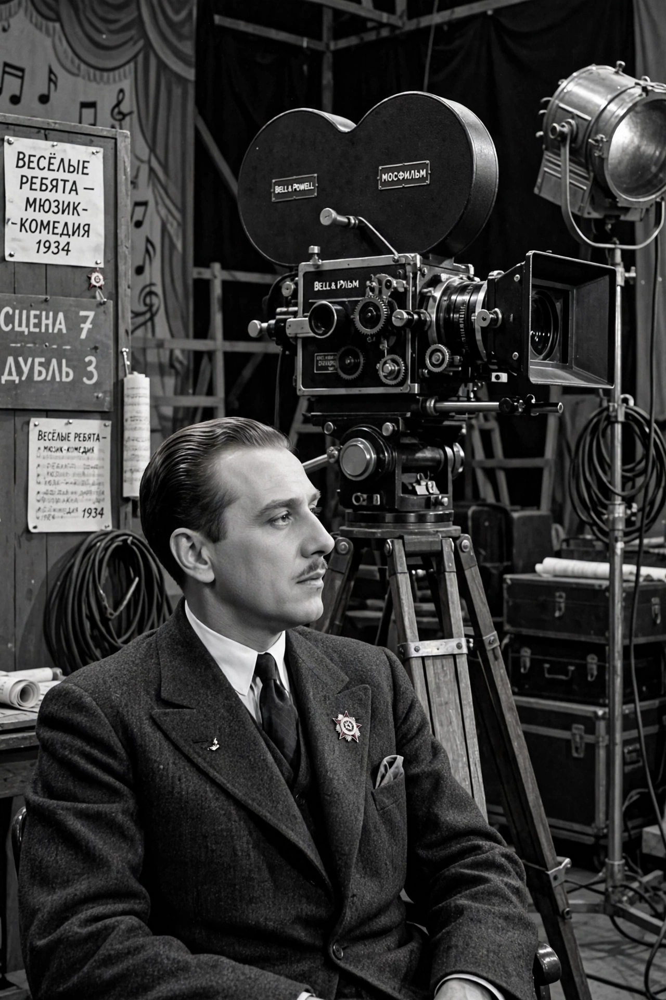

Grigori Aleksandrov
| Grigori Aleksandrov | |
|---|---|
 | |
| Born | Grigori Vasilyevich Mormonenko 23 January 1903 Yekaterinburg, Russian Empire |
| Died | 16 December 1983 (aged 80) Moscow, Soviet Union |
| Occupation | Film director, screenwriter, actor |
| Years active | 1924–1974 |
| Spouse | Lyubov Orlova (m. 1933; died 1975) |
| Notable work | Jolly Fellows (1934), Circus (1936), Volga-Volga (1938) |
Grigori Vasilyevich Aleksandrov (Russian: Григорий Васильевич Александров; born Mormonenko; 23 January 1903 – 16 December 1983) was a Soviet film director and screenwriter. He began as Sergei Eisenstein's closest collaborator — co-directing Strike, Battleship Potemkin and October — and in the 1930s became the creator of the Soviet musical comedy, directing a string of hugely popular films starring his wife, Lyubov Orlova.
With Eisenstein
Aleksandrov met Eisenstein at the Proletkult Theatre in Moscow and followed him into cinema. He co-wrote and co-directed Eisenstein's silent classics and accompanied him to Hollywood and Mexico in 1930–32 for the ill-fated ¡Que viva México! project; at Eisenstein's request he also made the short Romance sentimentale (1930) in Paris.
Musical comedies
Working within the state film system (see Goskino) and the emerging doctrine of socialist realism, Aleksandrov turned to light entertainment. Jolly Fellows (1934), the first Soviet musical comedy, with songs by Isaak Dunayevsky, was an enormous success. Circus (1936) featured Orlova as an American circus performer who finds acceptance in the USSR, and its "Song of the Motherland" became a virtual second national anthem. Volga-Volga (1938), a comedy about amateur performers sailing to a Moscow competition, was reportedly Stalin's favourite film. Shining Path (1940) and the post-war Spring (1947) continued the formula.
Later life
After Stalin's death Aleksandrov's style fell out of fashion, though he continued to direct, teach at VGIK and make films such as The Composer Glinka (1952) and Starling and Lyre (1974). He was named People's Artist of the USSR and a Hero of Socialist Labour. Orlova died in 1975; Aleksandrov died in Moscow in 1983.